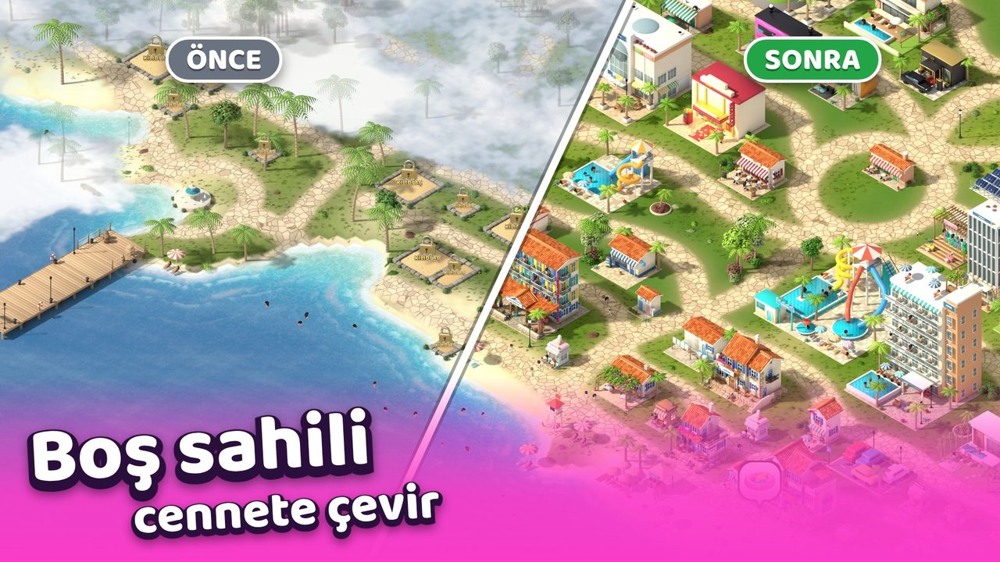
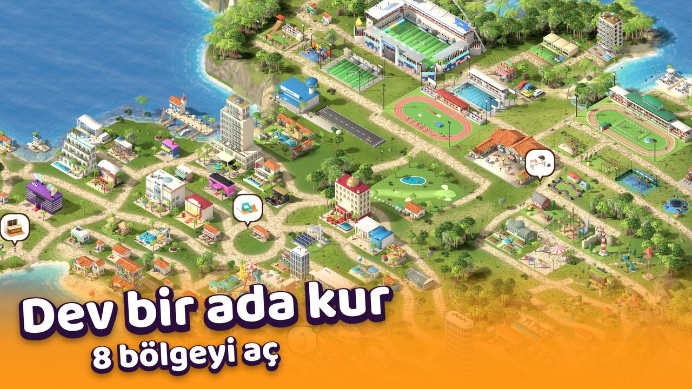
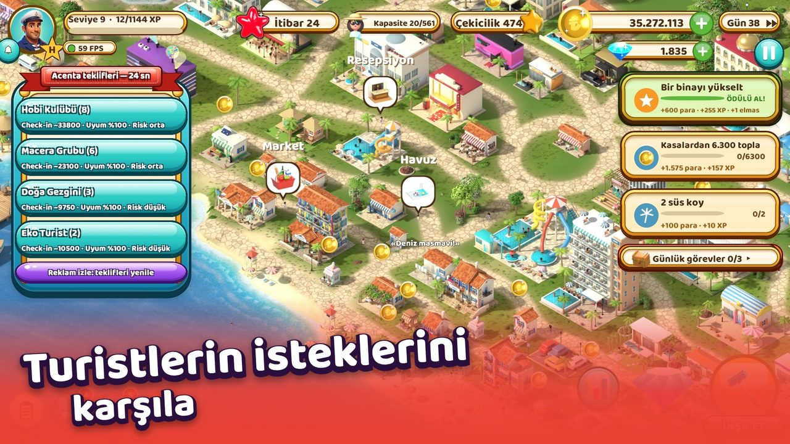
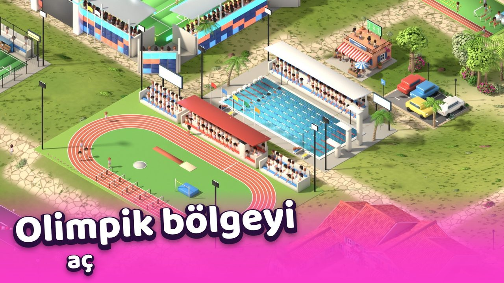
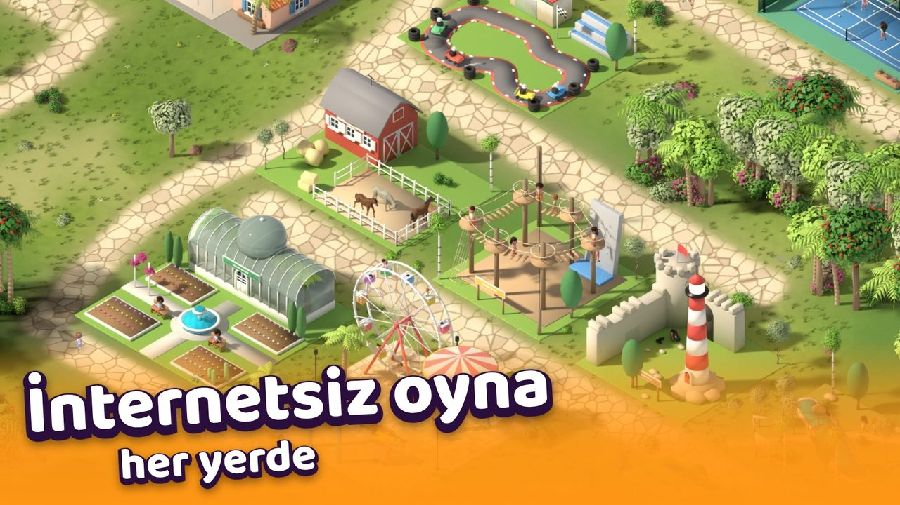
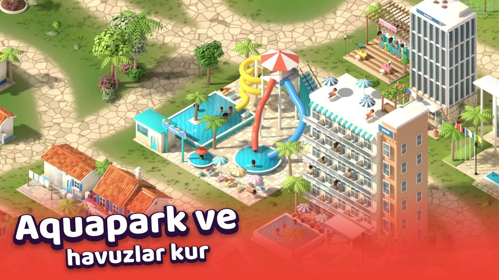
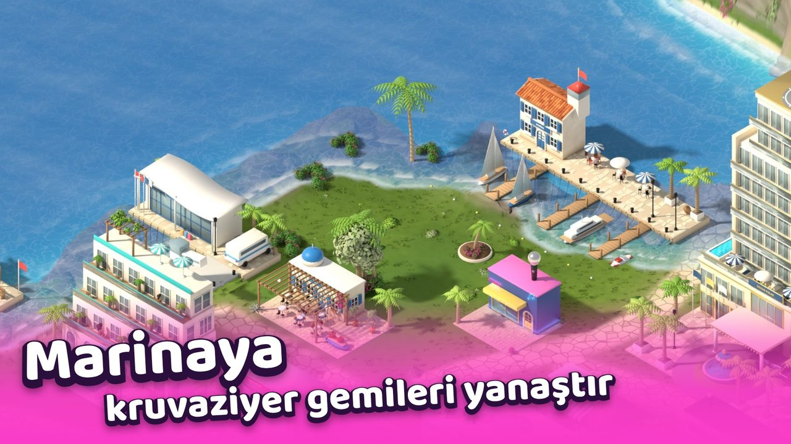
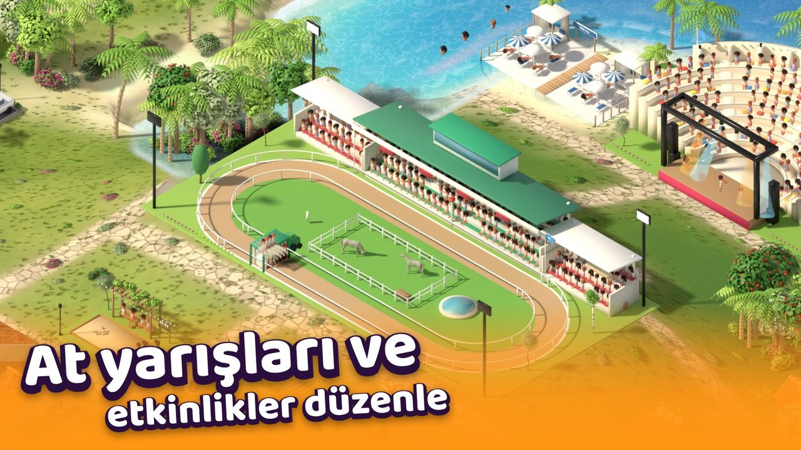

Tanıtım videosu
Ekran görüntüleri








Büyükannenden kalan ada, yıllar önceki fırtınadan beri ıssız. Feribot kaptanı Deniz seni kıyıya bırakıyor ve görev belli: bu adayı denizlerin en güzel tatil cennetine dönüştür!
ADANI SIFIRDAN KUR
Resepsiyonla başla; pansiyonlar, oteller, restoranlar, kafeler ve marketler aç. Aquapark, plaj kulübü, lunapark, go-kart, hayvanat bahçesi, golf, marina… 140'tan fazla tesis seni bekliyor.
YENİ: SPOR ADASI
Dev stadyum, at yarışları, olimpik havuz, atletizm pisti, BMX parkuru, yamaç paraşütü ve amfitiyatroda konserler! Sporcuları ve seyircileri adana getir, Ada Oyunları’nı düzenle.
PERSONELİNİ İŞE AL
Her tesis kendi ekibiyle çalışır. Acemi, Kalfa ve Usta çalışanlar işe al, maaşlarını öde, kazancını katlayarak artır.
MİSAFİRLERİNİ MUTLU ET
Aileler, balayı çiftleri, maceraperestler, sporcular, seyirciler… Her kafilenin kendi istekleri var. İsteklerini karşıla, yıldız topla, itibarını yükselt.
8 BÖLGEYİ KEŞFET
Sahilden kasabaya, lüks tepeden doğa bölgesine ve yeni spor bölgelerine kadar sisin ardındaki bölgeleri aç. Feribot, havalimanı, helikopter pisti ve kruvaziyer limanıyla daha çok misafir getir.
CANLI BİR ADA
Dönme dolap dönsün, atlar yarışsın, tribünler dalgalansın, havuzlar yüzücülerle dolsun. Tesislerini yükselttikçe adan gözünün önünde canlanır.
KAZAN, YÜKSELT, BÜYÜ
Tesislerinde biriken parayı topla, binalarını üç kademeye kadar yükselt, Kaptan Deniz’in görevlerini tamamla. Sen yokken de adan 8 saate kadar kazanmaya devam eder.
İNTERNETSİZ OYNA
İnternet yok mu? Sorun değil: adanı internetsiz kur ve büyüt. (Skor tablosu, haftalık yarış, bulut kaydı ve satın alma için bağlantı gerekir.)
İLERLEMEN GÜVENDE
Google Play Oyunlar ile ilerlemen buluta kaydedilir; telefon değiştirsen de kaldığın yerden devam edersin.
Ada oyunları, otel ve tatil oyunları, işletme ve tycoon oyunları seviyorsan, sahilden zirveye uzanan bu yolculukta ada patronu sensin!
Oyun ücretsizdir; geçiş reklamları, isteğe bağlı ödüllü reklamlar ve uygulama içi satın alımlar (elmas) içerir.